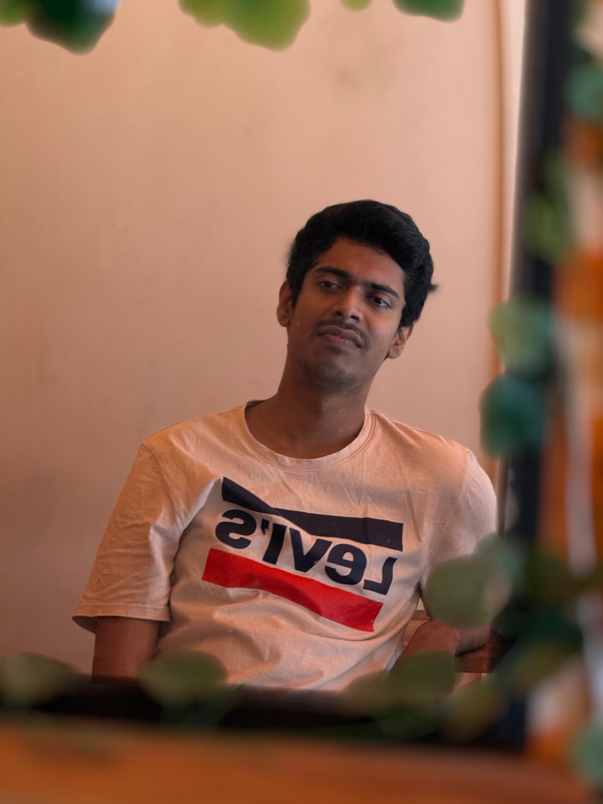

Elegant Personal Portfolio
Designing thoughtful digital experiences with modern web craftsmanship.
A polished portfolio built to showcase projects, skills, and professional experience with an elevated dark theme.

Experience & Skills
- Web application design and development
- Modern frontend architecture
- Cross-platform product thinking